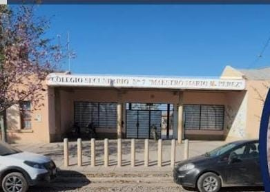

Bienvenidos
Bienvenidos a la página de 1° 5ta. En este espacio se puede encontrar información del colegio, los alumnos y el horario semanal del curso.

Historia del colegio
El colegio es una institución educativa de nivel secundario ubicada en la ciudad de Perico, Jujuy. A lo largo de los años ha formado a muchos estudiantes de la comunidad, brindando educación y acompañamiento para que los jóvenes puedan continuar sus estudios y prepararse para su futuro.
Actualmente continúa siendo un espacio de aprendizaje, convivencia y participación para los estudiantes.
Alumnos de 1° 5ta.
1. Arancibia Thiago Jonathan
2. Caceres Bastian Amir
3. Choque Alexander Leonel
4. Choque Lionel Alejandro
5. Flores Fernando Javier
6. Gaspar Mariano Alejandro
7. Quispe Thiago Ivan R.
8. Terceño Thiago Tomas
9. Zarate Juan Mateo
10. Zeppa Lautaro Tiziano
11. Bruno Leonardo Ismael
12. Cardenas Vila Tito Joel
Horario semanal - 1° 5ta.
| Horario | Lunes | Martes | Miércoles | Jueves | Viernes |
|---|---|---|---|---|---|
| 13:30 - 14:10 |
Música Cisterna, Joaquín |
Leng. y Liter. Cruz Soruco, Anahí |
Art. Visuales Torres, Mateo Supl. Mamaní, Melany |
For. E y C. García, Daniel |
Cs. Biológicas Choque, Hermógenes Supl. Gerónimo, Nadia |
| 14:10 - 14:50 | |||||
| 15:00 - 15:40 |
Historia Ramos, Marcela |
Matemática Patricia, Cozzi |
Historia Ramos, Marcela |
Inglés Ramos, Virginia |
Leng. y Liter. Cruz Soruco, Anahí |
| 15:40 - 16:20 | |||||
| 16:30 - 17:10 |
For. E y C. García, Daniel |
Geografía Ocedo, Genoveva Supl. Gaspar, Sandra |
Tecnología Casasola, Ariel |
Cs. Biológicas Choque, Hermógenes Supl. Gerónimo, Nadia |
Matemática Patricia, Cozzi |
| 17:10 - 17:50 | |||||
| 17:50 - 18:30 |
Geografía Ocedo, Genoveva Supl. Gaspar, Sandra |
Inglés Ramos, Virginia |
Leng. y Liter. Cruz Soruco, Anahí |
Tecnología Casasola, Ariel |